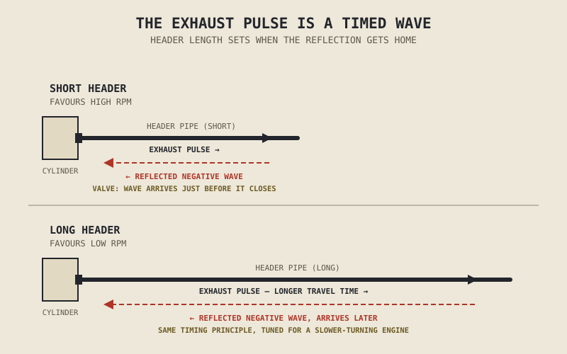

Bolt a cheap, mismatched aftermarket exhaust onto an otherwise unmodified engine and it will very often run noticeably worse at low RPM — flat, hesitant, less torquey than before. The common explanation is that the new pipe "lost too much back pressure," as if an exhaust system's job were partly to hold gas back. That explanation is almost exactly backwards, and untangling why is most of this chapter's job.
Chapter 2.2 described the exhaust stroke simply: the piston rises, the exhaust valve is open, spent gas leaves. Chapter 2.7 went a step further and mentioned that valve overlap lets outgoing exhaust gas help scavenge the cylinder at high RPM. This chapter finishes that story, because the exhaust system turns out to be doing something far more active than simply providing an exit — much like the intake tract Chapter 2.3 described, it's a tuned instrument, not a passive pipe.
Exhaust Pulses Are Waves, Not Just Flow
When the exhaust valve opens and combustion gas rushes into the header pipe, it doesn't move down that pipe as a smooth, uniform stream — it leaves as a sharp pulse of high pressure, and that pulse travels down the pipe as a genuine pressure wave, the exhaust-side mirror of the intake pressure waves Chapter 2.3 already introduced. When that wave reaches the end of the header, or a change in pipe diameter, part of it reflects back toward the cylinder — and depending on the exact geometry it reflects off, it can return as either a positive pressure wave or a negative, low-pressure one.
A negative wave arriving back at the exhaust valve just before it closes is exactly what a well-tuned exhaust system is built to produce, because it actively helps pull the last of the spent gas out of the cylinder and, during the valve overlap Chapter 2.7 described, helps draw the next intake charge in behind it. This is the exhaust system's real, active contribution to how well an engine breathes — not a passive channel for gas to escape through, but a timed, tuned extension of the combustion cycle itself.
Header Length and Diameter: The Exhaust Version of Chapter 2.3's Trade-Off
Because a pressure wave takes a fixed amount of time to travel down a pipe and reflect back, regardless of engine speed, header length and diameter tune exactly which RPM this helpful, negative reflected wave arrives at — precisely mirroring the intake tract length trade-off Chapter 2.3 already established. A shorter, wider header tends to favour high-RPM performance, timing its reflected wave correctly when the engine is spinning fast and strokes are short in real time. A longer, narrower header tends to favour low-RPM torque, timing that same reflection correctly when the engine is turning over more slowly.
This is precisely why a mismatched, off-the-shelf aftermarket exhaust so often costs an engine low-end torque rather than gaining it: not because it "lost back pressure," but because its length and diameter were tuned — often for higher RPM, in pursuit of a louder, more aggressive sound — for a different point in the rev range than the engine's other components, from cam timing in Chapter 2.7 to intake tuning in Chapter 2.3, were designed around.
An exhaust pipe isn't a drain. It's a timed instrument, tuned to send a helpful pressure wave back to the cylinder at exactly the right instant — and changing its length or diameter changes which RPM that instant falls at, not simply how freely gas can escape.

An exhaust pulse traveling down a header pipe and reflecting back as a negative pressure wave, timed to arrive at the exhaust valve just before closure — shown for a short header favouring high RPM and a long header favouring low RPM.
Muffling and Cleaning: The Exhaust's Other Two Jobs
Beyond wave tuning, an exhaust system carries two more responsibilities entirely separate from performance. A muffler, or silencer, uses internal chambers and baffles to disrupt and dampen the sharp pressure pulses that would otherwise leave the pipe as raw, extremely loud noise — ideally without disrupting the tuned wave dynamics the header was built to produce, though a poorly designed muffler can undo a well-tuned header just as easily as a mismatched header can undermine the rest of the engine. A catalytic converter, positioned earlier in the system, uses a chemically active surface, typically coated with platinum, palladium, or rhodium, to convert harmful exhaust compounds — carbon monoxide, unburned hydrocarbons, and nitrogen oxides — into far less harmful carbon dioxide, water vapour, and nitrogen, a chemical cleanup step with no direct connection to how the engine performs.
This is also why removing or modifying either component — a common modification chased purely for sound — carries real consequences beyond noise: doing so changes the exhaust's wave-tuning geometry, and on a fuel-injected engine, changes the very oxygen-sensor feedback Chapter 2.13 described the ECU relying on to keep the air-fuel ratio correct. A "loud pipe" installed without any corresponding adjustment elsewhere doesn't just get louder — it can quietly throw off the calibration Chapter 2.13's entire fuel delivery discussion assumed was still correct.
A Common Misconception, Cleared Up Early
The "you need back pressure for power" myth deserves to be retired plainly. Generic resistance to flow — gas simply having a harder time getting out — doesn't help an engine breathe; it hurts it, the same way a too-small intake would hurt Chapter 2.3's volumetric efficiency by restricting airflow on the way in. What a well-designed exhaust provides isn't resistance, it's correctly timed wave reflection, and those are entirely different things that happen to sometimes get confused because a poorly matched, high-flow aftermarket exhaust genuinely can perform worse than the stock system it replaced. The performance loss in that case comes from mistimed wave tuning and disrupted fuelling calibration, not from a deficit of back pressure the new pipe failed to provide.
Where This Leads
Chapters 2.3, 2.4, and 2.13 through 2.14 together complete the combustion loop this part of the book has been assembling piece by piece: air in, fuel matched to it, ignition, and now spent gas tuned on its way out. What combustion leaves behind as an unavoidable byproduct — heat, far more of it than the surrounding metal can tolerate unmanaged — is Chapter 2.15's subject, and the cooling system built specifically to carry that heat away.
Key Concepts to Remember
- Exhaust gas leaves the cylinder as a pressure pulse, not a smooth flow, and that pulse travels down the header as a genuine wave that reflects back toward the cylinder.
- A correctly timed negative reflected wave, arriving just before the exhaust valve closes, actively helps clear the cylinder and assists the intake scavenging effect Chapter 2.7 introduced.
- Header length and diameter tune which RPM this reflected wave benefits most, exactly mirroring the intake tract trade-off from Chapter 2.3 — short and wide favours high RPM, long and narrow favours low RPM.
- Mufflers reduce noise and catalytic converters chemically clean exhaust gas, and modifying either changes wave-tuning geometry and, on fuel-injected engines, the sensor feedback Chapter 2.13 described.
- "Back pressure" as a source of power is a myth; what a good exhaust provides is correctly timed wave reflection, not resistance to flow, and generic restriction always hurts performance rather than helping it.
Cross-References
| ← Ch. 2.2 | Introduced the exhaust stroke; this chapter explains what actually happens to the gas once it leaves the cylinder. |
| ← Ch. 2.3 | Introduced intake tract wave tuning; this chapter shows the exhaust system uses the identical physical principle in reverse. |
| ← Ch. 2.7 | Introduced valve overlap and scavenging; this chapter explains the exhaust wave that makes that scavenging effect possible. |
| ← Ch. 2.13 | Established fuel injection's reliance on oxygen sensor feedback; this chapter shows how exhaust modifications can quietly disrupt that same calibration. |
| → Ch. 2.15 | The cooling system, managing the heat combustion produces as an unavoidable byproduct of the process this and the preceding chapters have now fully described. |